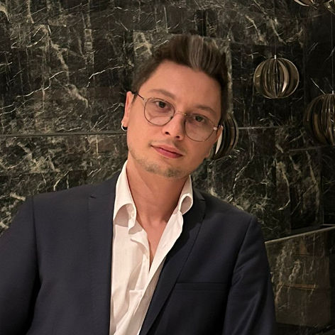

Tunahan Yilmaz's Portfolio!
I'm a DevOps Engineer

Summary
Highly motivated and dedicated professional with 5 years of
experience in the electronic industry, transitioning career into
DevOps Engineering. Strong background in electronic hardware
engineering with recent experience in designing and implementing
CI/CD pipelines and developing automation scripts. Proficient in
technologies such as Docker, Kubernetes, Python, and more.
Education
- Cankaya University - Bachelor’s Degree in Electronics &
Communication Engineering (2013-2017)
- Vilnius Gediminas Technical University - Erasmus in
Electronics & Communication Engineering (2015)
Work Experience
-
DevOps Engineer - SameUP
Apr 2023 - Present
- Assisted in the design and implementation of
CI/CD pipelines for various projects
- Collaborated with developers to ensure the
smooth functioning of applications in
various environments
- Developed automation scripts for deployment and
monitoring of applications
- Maintained and monitored infrastructure systems
and performed routine mainte-
nance tasks
- Worked with AWS services such as EC2, S3, and
RDS to deploy and maintain appli-
cations
- Assisted in the implementation of
containerization technologies such as Docker and
Kubernetes
- Conducted system analysis and troubleshooting to
identify and resolve issues
Skills
- AWS
- Google Cloud
- Azure
- Docker
- Kubernetes
- HTML
LinkedIn
Gitlab
Contact Me